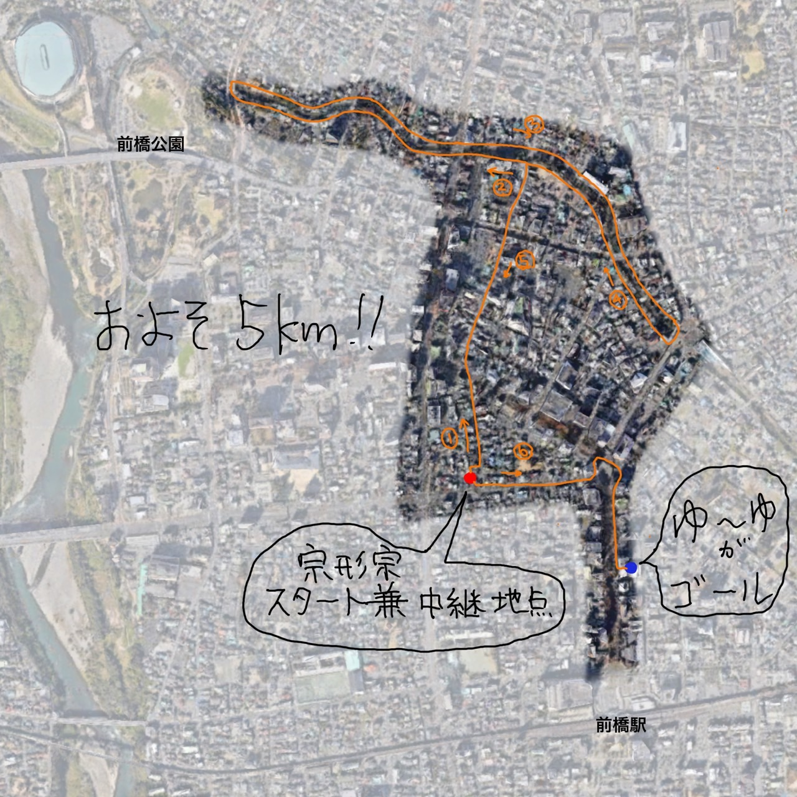

第1回アチアチむなかたマラソン大会2024!! ようこそ！第1回アチアチむなかたマラソン大会2024!! 特設サイトへ
アツい夏が近づいてきました！今年の夏は、第1回アチアチむなかたマラソン大会2024!! に参加して、熱いハートでアツく走りませんか？
アチアチむなかたマラソン大会は、群馬県前橋市で開催される、世界初アツいハートでアツく走る をテーマにしたマラソン大会です。
誰でも参加できます！マラソン初心者の方も大歓迎です。
5km, 5m, 5cm, 5mm の4つの距離から選べます。自分の実力に合わせて、無理なく参加できる距離を選びましょう。

制限時間は設けていませんので、マイペースで走ることができます。
参加費は800円（ゆ〜ゆ代）です。
自分の想定タイムを申告し、そのタイムに近い人が優勝となります。
優勝者は、ゆ〜ゆで源泉をかけ流してもらえる権利と名誉が与えられます。
コースは現在募集中です。あなたのアチアチなコースアイディアをぜひお聞かせください！
アチアチむなかたマラソン大会は、アツいハートでアツく走ることを楽しむための大会です。ぜひ、あなたも参加して、アツい夏をアチアチな思い出でいっぱいにしましょう！
大会に関する最新情報は、この特設サイトで随時更新していきます。
Twitter: @achiachimunakata_marathon
大会に関するご質問は、こちら までお気軽にお問い合わせください。
アチアチむなかたマラソン大会実行委員会
一緒にアツく盛り上がりましょう！